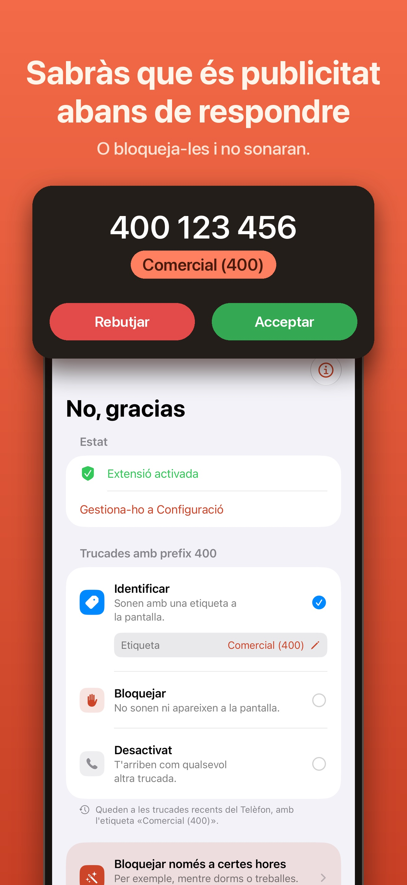
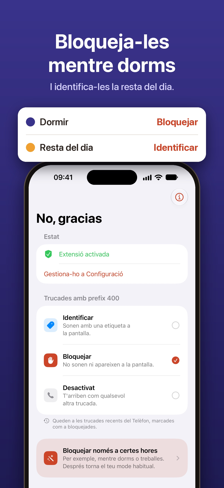
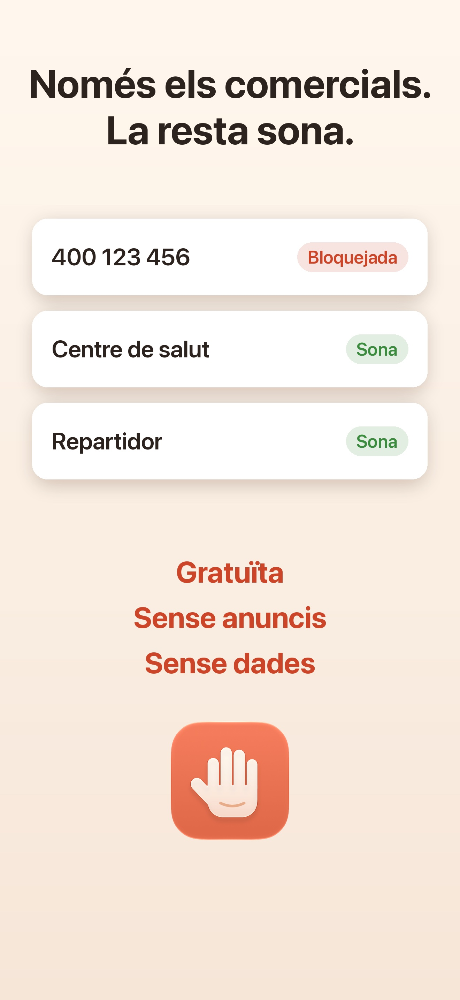

Premsa
Tot el que cal per escriure sobre «No, gracias». Pots fer servir lliurement el text, les captures i la icona.
En poques paraules
«No, gracias» és una app gratuïta per a iPhone que identifica o bloqueja les trucades comercials amb prefix 400, obligatori a Espanya des del 17 d'octubre de 2026. No té anuncis ni comptes i no recull cap dada: tot passa a l'iPhone.
Dades
- Nom: No, gracias
- Desenvolupador: Oswaldo Rubio, desenvolupador iOS independent
- Llançament: 7 de novembre de 2026 (App Store d'Espanya)
- Preu: gratuïta, sense anuncis, sense subscripció ni versió de pagament. Donacions opcionals que no desbloquegen res.
- Requisits: iPhone amb iOS 18 o posterior
- Idiomes: català, castellà, basc, gallec i anglès
- Privadesa: sense servidors, comptes, analítica ni seguiment
- App Store: apps.apple.com/es/app/id6830892528
Què fa
- Identificar: la trucada sona, però a la pantalla apareix «Comercial (400)» i decideixes si contestes.
- Bloquejar: les trucades 400 no sonen ni apareixen, i qui truca no se n'assabenta.
- Que canviï sola: bloqueja mentre dorms o treballes amb els filtres de concentració, el Centre de control, Siri o Dreceres.
- Excepcions: números 400 concrets que sempre sonen, com el del banc o l'assegurança.
- Filtre d'SMS: amaga els avisos de l'operador sobre trucades 400 ja bloquejades.
La història
Des del 17 d'octubre de 2026, les trucades comercials a Espanya han de sortir de números que comencen per 400. La norma permet reconèixer-les, però no les atura: continuen sonant. Les alternatives que hi havia cobraven per bloquejar-les o mostraven anuncis.
Oswaldo Rubio, desenvolupador iOS, va crear «No, gracias» per resoldre-ho de franc i sense recollir dades. La primera versió va passar d'idea a app funcionant en menys de 24 hores, desenvolupada amb l'ajuda de Claude, l'assistent d'IA d'Anthropic. Des de llavors ha incorporat automatització, excepcions, un filtre d'SMS i cinc idiomes, inclosos el català, el basc i el gallec.
Material
- Icona (1024 × 1024): clara · fosca
- Captures de l'App Store (1320 × 2868): identificar · bloquejar mentre dorms · només els comercials
- Captures de l'app: identificar · bloquejar · automatitzar
- Imatge per a xarxes (1200 × 630): og/ca.png


Contacte
Per a entrevistes o qualsevol dada: info@nogracias.app.


